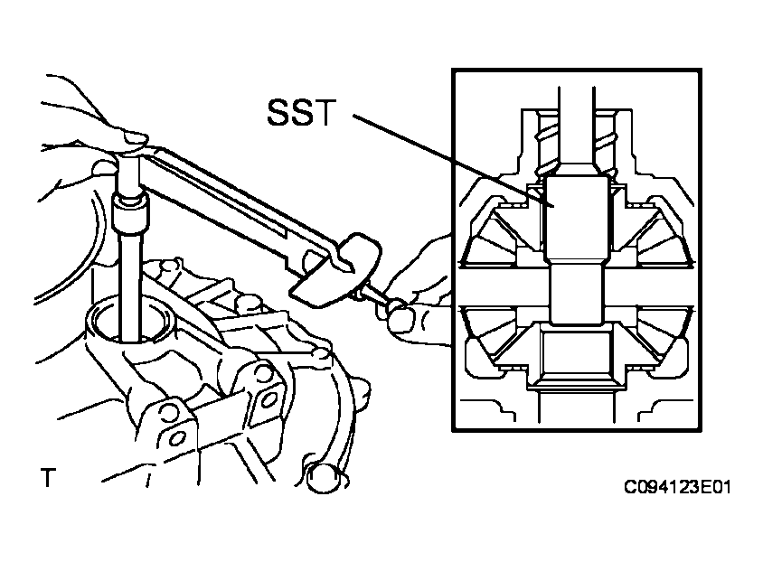

Differential Case: Reassembly
- INSTALL COUNTER DRIVEN GEAR
- Using SST and a press, press in the counter driven gear to the differential drive pinion.
SST 09950-60010 (09951-00350), 09950-70010 (09951-07150)
NOTE: When replacing the counter driven gear, replace the counter drive gear in the transaxle case, too.HINT:
The differential drive pinion should be pressed in until it comes in contact with the counter driven gear.
- Using SST and a press, press in the counter driven gear to the differential drive pinion.
- INSTALL DIFFERENTIAL DRIVE PINION PLUG
- Using SST and a plastic-faced hammer, tap in a new differential drive pinion plug to the differential drive pinion.
SST 09221-25026 (09221-00071)
Standard clearance A: 2.5 to 2.6 mm (0.0984 to 0.1023 in.)
- Using SST and a plastic-faced hammer, tap in a new differential drive pinion plug to the differential drive pinion.
- INSTALL FRONT DIFFERENTIAL SIDE GEAR
- After applying ATF to the 2 front differential side gears, 2 side gear thrust washers, 2 front differential pinions and 2 pinion thrust washers, install them to the front differential case.
HINT:
At the time of installation, set the alignment of the front differential pinions perpendicular to that of the side gear and rotate them so that their holes will be aligned with the holes in the differential case.
- After applying ATF to the 2 front differential side gears, 2 side gear thrust washers, 2 front differential pinions and 2 pinion thrust washers, install them to the front differential case.
- INSTALL FRONT DIFFERENTIAL NO. 1 PINION SHAFT
- Install the pinion shaft to align the lock pin holes on the pinion shaft and differential case.
- INSPECT BACKLASH
- Measure the side gear backlash while holding 1 pinion gear toward the case.
Standard backlash: 0.05 to 0.20 mm (0.0020 to 0.0079 in.)
If the backlash is not within the specification, install the correct thrust washer to the side gear.
- Referring to the table below, select thrust washers which will ensure that the backlash is within the specification for both sides.
Standard thrust washer thickness
STANDARD THRUST WASHER THICKNESS SPECIFICATIONSThickness Thickness 0.95 mm (0.0374 in.) 1.10 mm (0.0433 in.) 1.00 mm (0.0394 in.) 1.15 mm (0.0453 in.) 1.05 mm (0.0413 in.) 1.20 mm (0.0472 in.) If the backlash is not within the specification, install a thrust washer of a different thickness.
- Measure the side gear backlash while holding 1 pinion gear toward the case.
- INSTALL FRONT DIFFERENTIAL PINION SHAFT STRAIGHT PIN
- Using a pin punch and hammer, tap in the pinion shaft straight pin.
- Using a chisel and hammer, stake the differential case.
- INSTALL FRONT DIFFERENTIAL RING GEAR
- Using ATF and a heater, heat the front differential ring gear to 90 to 110°C (194.0 to 230.0°F).
- Clean the contact surface of the front differential case.
- Install the 4 lock plates and 8 bolts.
Torque: 88.2 N*m (899 kgf*cm, 65 ft.*lbf)
- Stake the ring gear lock plate.
- INSTALL SPEEDOMETER DRIVE GEAR
- Install the speedometer drive gear to the differential case.
- INSTALL FRONT DIFFERENTIAL CASE FRONT TAPERED ROLLER BEARING
- Using SST and a press, press in the front differential case front tapered roller bearing to the differential case.
SST 09316-60011 (09316-00011)
- Using SST and a press, press in the front differential case front tapered roller bearing to the transaxle housing.
SST 09950-60020 (09951-00750), 09950-70010 (09951-07150)
- Using SST and a press, press in the front differential case front tapered roller bearing to the differential case.
- INSTALL FRONT DIFFERENTIAL CASE REAR TAPERED ROLLER BEARING
- Using SST and a press, press in the front differential case rear tapered roller bearing to the differential case.
SST 09726-40010, 09950-60020 (09951-00790)
- Using SST and a press, press in the shim and front differential case rear tapered roller bearing outer race to the transaxle case.
SST 09950-60010 (09951-00650, 09950-60020 (09951-00720), 09950-70010 (09951- 07100, 09951-07200)
- Using SST and a press, press in the front differential case rear tapered roller bearing to the differential case.
- ADJUST TAPERED ROLLER BEARING PRELOAD
- Coat the front differential case and bearing with ATF, and install them to the transaxle case.
- Install the 14 bolts and transaxle housing.
Torque: 29.4 N*m (300 kgf*cm, 22 ft.*lbf) for bolt A
22.1 N*m (225 kgf*cm, 16 ft.*lbf) for bolt B
- Using SST and a small torque wrench, measure the preload of the differential gear.

Courtesy of © TOYOTA, LICENSE AGREEMENT TMS1002SST 09564-32011
New bearing preload: 0.98 to 1.57 N/m (10.0 to 16.0 kgf*cm, 8.7 to 13.9 in.*lbf)
Used bearing preload: 0.49 to 0.78 N/m (5.0 to 8.0 kgf*cm, 4.3 to 6.9 in.*lbf)
If the preload is not within the specification, remove the differential from the transaxle case. Reselect the transaxle case side adjusting shim according to the following table.
Standard adjusting shim thickness
STANDARD ADJUSTING SHIM THICKNESSMark Thickness Mark Thickness 01 1.90 mm (0.0748 in.) 11 2.40 mm (0.0945 in.) 02 1.95 mm (0.0768 in.) 12 2.45 mm (0.0965 in.) 03 2.00 mm (0.0787 in.) 13 2.50 mm (0.0984 in.) 04 2.05 mm (0.0807 in.) 14 2.55 mm (0.1004 in.) 05 2.10 mm (0.0827 in.) 15 2.60 mm (0.1024 in.) 06 2.15 mm (0.0846 in.) 16 2.65 mm (0.1043 in.) 07 2.20 mm (0.0866 in.) 17 2.70 mm (0.1063 in.) 08 2.25 mm (0.0886 in.) 18 2.75 mm (0.1083 in.) 09 2.30 mm (0.0906 in.) 19 2.80 mm (0.1102 in.) 10 2.35 mm (0.0925 in.) - -